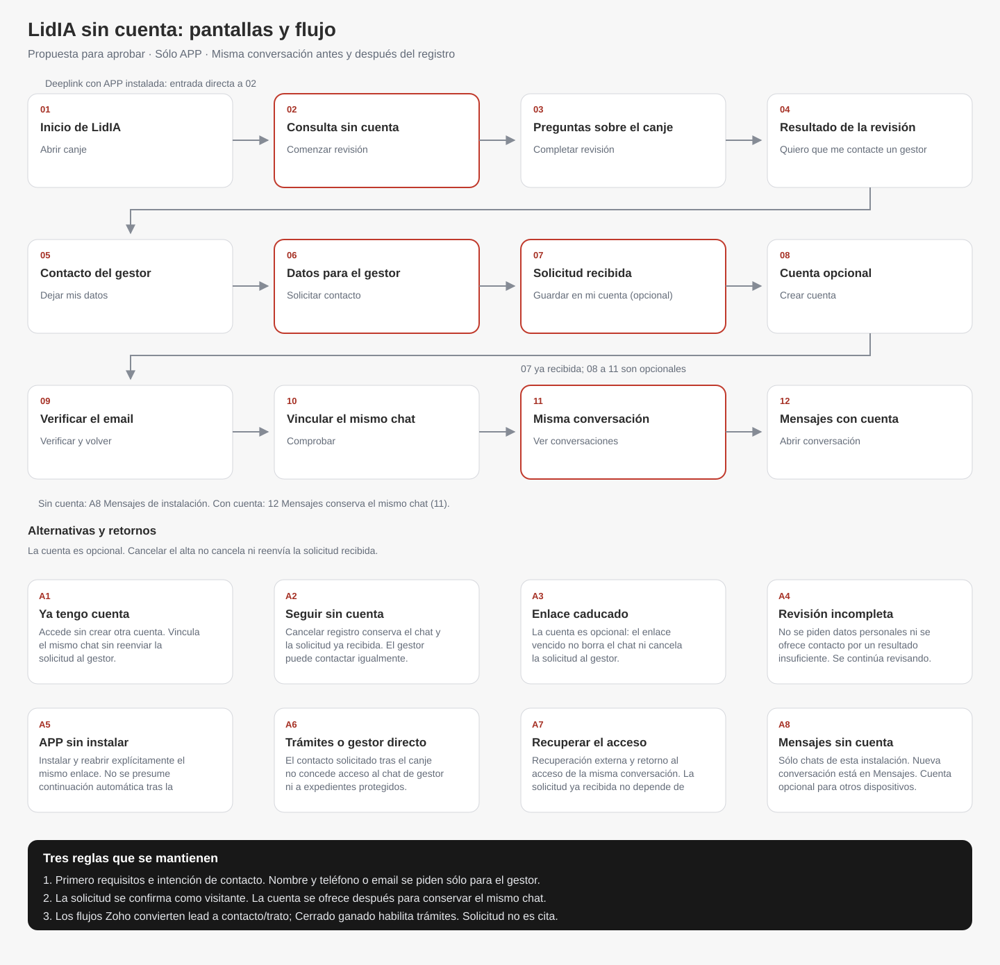

Pestañas principales
LidIA · Trámites · Mensajes · Servicios. Conservan el menú inferior. El visitante sólo accede a sus chats LidIA y a servicios públicos.
Revisión de pantallas · LidIA sin cuenta
Pendiente de aprobaciónDos diagramas para decidir el recorrido. Las vistas nuevas son maquetas de propuesta, con el diseño actual de Gestadia. Los datos son ficticios y los botones no envían nada al backend.
Lee cada fila de izquierda a derecha; continúa en la siguiente. Cuenta existente, cancelación y recuperación se detallan debajo.

Contacto sólo tras comprobar requisitos. Primero consulta sin datos personales. Tras un resultado suficiente y pedir un gestor, deja nombre y teléfono o email.
Solicitud como visitante; cuenta opcional. El gestor puede contactar sin registro. La cuenta se ofrece después para guardar el mismo chat.
Ejemplo de cualificación. El resultado completo, la señal para Portal/Zoho y la agenda deben acordarse e implementarse; estas maquetas no prueban su funcionamiento.
Pulsa una imagen para verla a tamaño completo. Cada fila continúa en la siguiente; las flechas indican la acción del usuario. Capturas de 390 × 844 del navegador, sin marco de dispositivo.
No crean otra conversación ni envían otra solicitud.
Estas capturas son del producto existente en demo, no del acceso anónimo conectado.
El diagrama y el inventario completo quedan incorporados a docs/app/NAVEGACION.md. No se sustituyen los mapas actuales por comportamiento aún no implementado.
| Pantalla | Entrada | Atrás / cancelar | Menú |
|---|
Si cambia de dispositivo: no basta copiar el enlace. Se requiere comprobar el control del recorrido original y la cuenta.
Tras vincular: se retira el acceso temporal a ese chat. Otros chats del visitante no se transfieren ni se cierran por esa acción.